Part 16
16.BGM: Okay, Everyone!
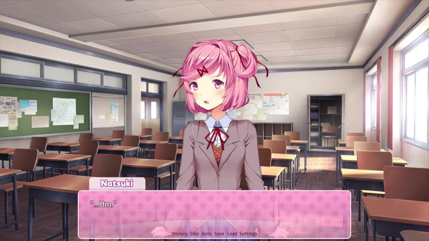
 : Well, it's not terrible. But it's pretty disappointing after your last one. Then again, if this one was as good as your last one, I would be completely pissed."
: Well, it's not terrible. But it's pretty disappointing after your last one. Then again, if this one was as good as your last one, I would be completely pissed."I'm not entirely sure why Natsuki doesn't openly care for our poem here. I'm assuming it's because we got our time commandeered by Yuri, but we still wrote a super cutsey poem.

 : Well, I guess I wanted to try something a little different this time.": Fair enough. You're still new to this, so I wouldn't expect you to find your style right away. I mean, everyone in the club writes really differently from each other...maybe you'll find a little influence from all of us.": For instance..."
: Well, I guess I wanted to try something a little different this time.": Fair enough. You're still new to this, so I wouldn't expect you to find your style right away. I mean, everyone in the club writes really differently from each other...maybe you'll find a little influence from all of us.": For instance..."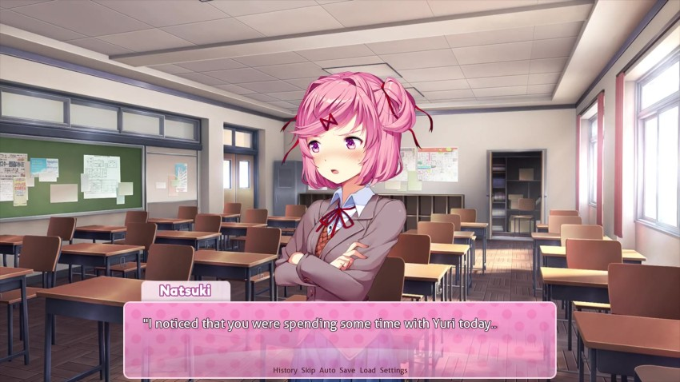
: Not that I care who you spend your time with. After all, I was taught never to expect anything from anybody. So it's not like I was waiting for you, or anything."Careful, Natsuki, your tsundere is showing.
: Still, you should at least look over my poem...you'll probably be able to learn something from it."BGM: Okay, Everyone! (Natsuki)
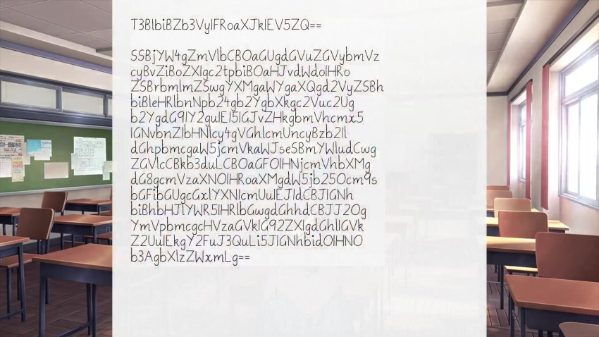
quote:
T3BlbiBZb3VyIFRoaXJkIEV5ZQ
SSBjYW4gZmVlbCB0aGUgdGVuZGVybmVz
cyBvZiBoZXIgc2tpbiB0aHJvdWdoIHRo
ZSBrbmlmZSwgYXMgaWYgaXQgd2VyZSBh
biBleHRlbnNpb24gb2YgbXkgc2Vuc2Ug
b2YgdG91Y2guIE15IGJvZHkgbmVhcmx5
IGNvbnZ1bHNlcy4gVGhlcmUncyBzb21l
dGhpbmcgaW5jcmVkaWJseSBmYWludCwg
ZGVlcCBkb3duLCB0aGF0IHNjcmVhbXMg
dG8gcmVzaXN0IHRoaXMgdW5jb250cm9s
bGFibGUgcGxlYXN1cmUuIEJ1dCBJIGNh
biBhbHJlYWR5IHRlbGwgdGhhdCBJJ20g
YmVpbmcgcHVzaGVkIG92ZXIgdGhlIGVk
Z2UuIEkgY2FuJ3QuLi5JIGNhbid0IHN0
b3AgbXlzZWxmLg
Poem impressions: Uh, Natsuki, did you write this with your face or something? This is the text equivelent of a static-filled televison.
The following is, uh, a little bit of a rant. Excuse the screenshot overload but its necessary this time.
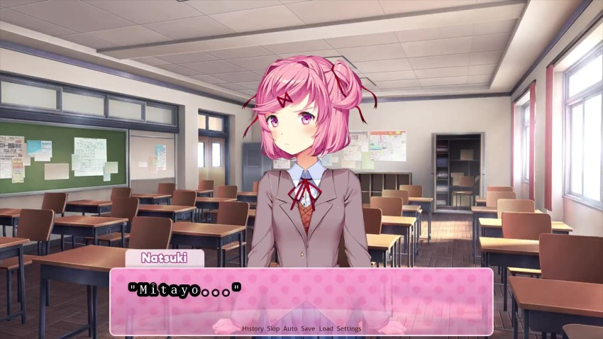
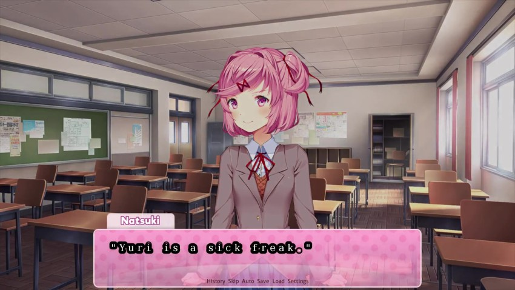
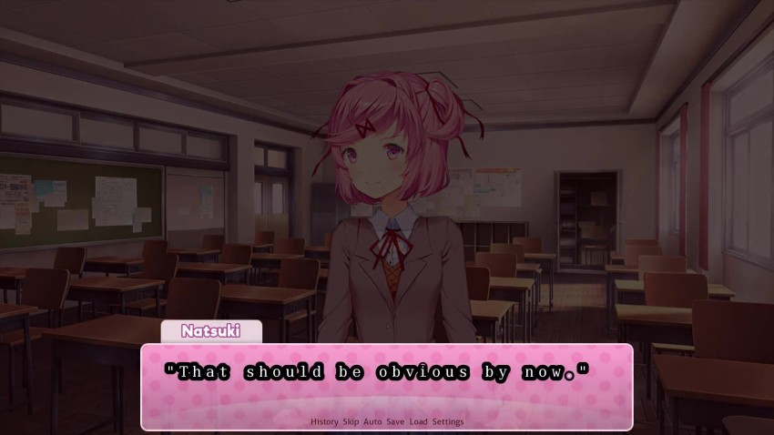
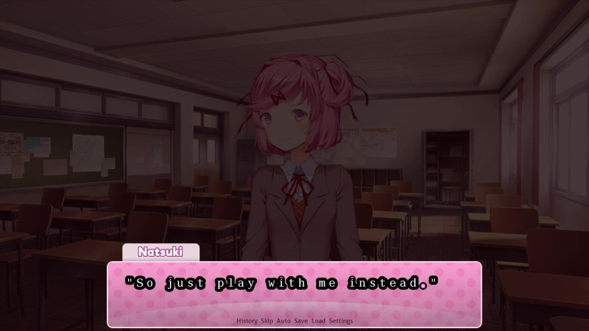
BGM: The music gets a bit off-pitch and theres a weird metronome sound playing.
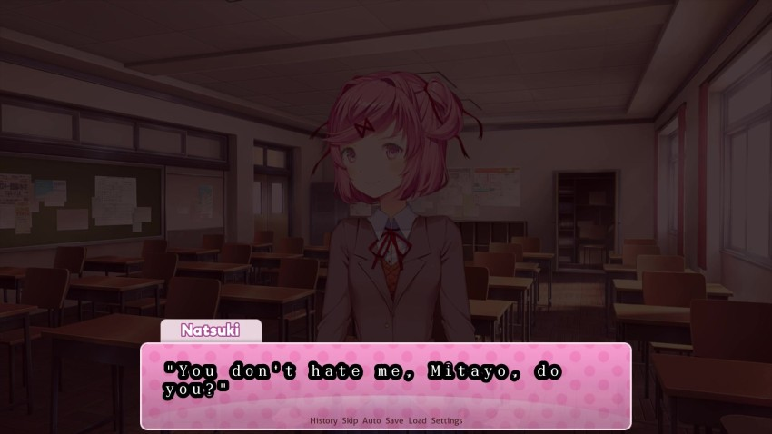
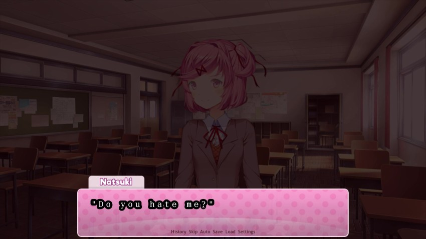
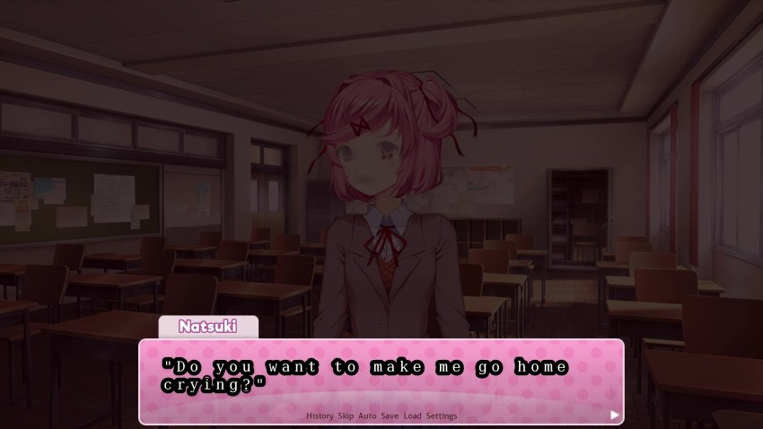

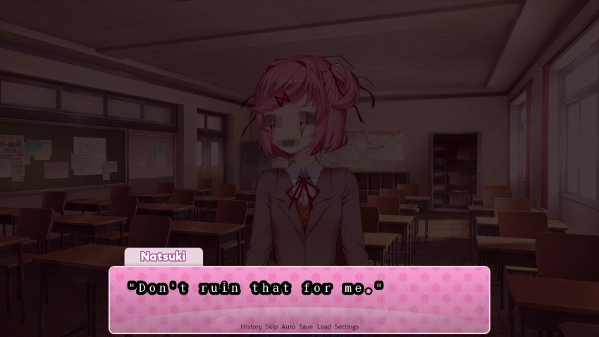
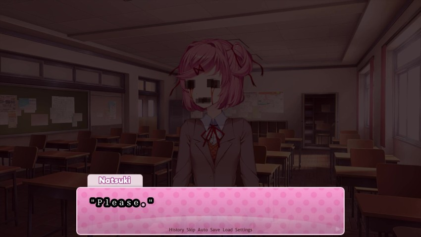
BGM: Music ends abruptly.
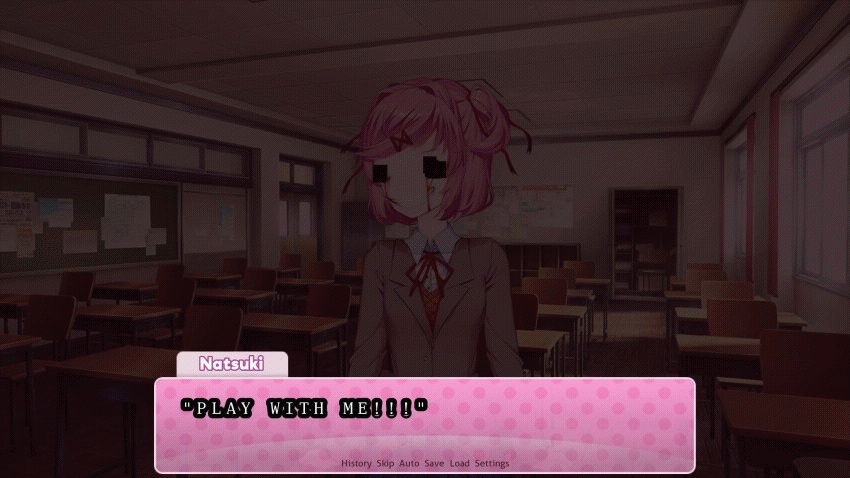

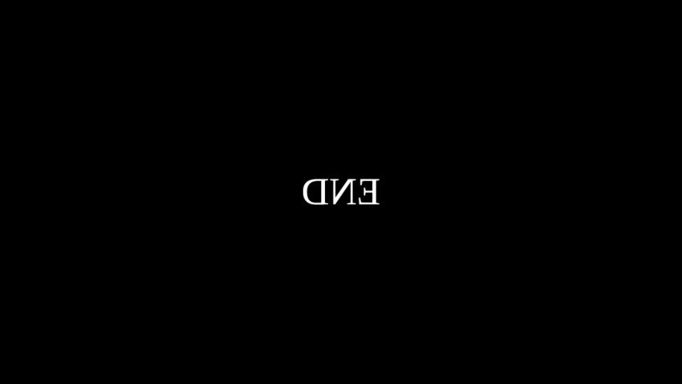
EVERYTHING'S FINE. MOVING ON.
BGM: Okay, Everyone!
 : How's the writing going?": Alright, I guess...": I'll take that. As long as it's not going bad! I'm happy that you're applying yourself. Maybe soon you'll come up with a masterpiece!": Ahaha, I wouldn't count on that...": You never know! Want to share what you wrote for today?": Sure... Here you go."
: How's the writing going?": Alright, I guess...": I'll take that. As long as it's not going bad! I'm happy that you're applying yourself. Maybe soon you'll come up with a masterpiece!": Ahaha, I wouldn't count on that...": You never know! Want to share what you wrote for today?": Sure... Here you go."I give my poem to Monika.
: ...Alright!": I was going 'Ooh' in my head while reading it. It's really metaphorical! I'm not sure why, but I didn't expect you to go for something so deep. I guess I underestimated you!"For some reason, Monika assumes that I was using Yuri's word group.
: It's easiest for me to keep everyone's expectations low. That way, it always counts when I put in some effort.": Ahaha! That's not very fair! Well, I guess it worked, anyway. You know that Yuri likes this kind of writing, right? Writing that's full of imagery and symbolism."This is the same thing she told us last time, back when we were pining for Yuri.
That feels like a million years ago now.
: Sometimes I feel like Yuri's mind is just totally detached from reality. I don't mean that like it's a bad thing, though."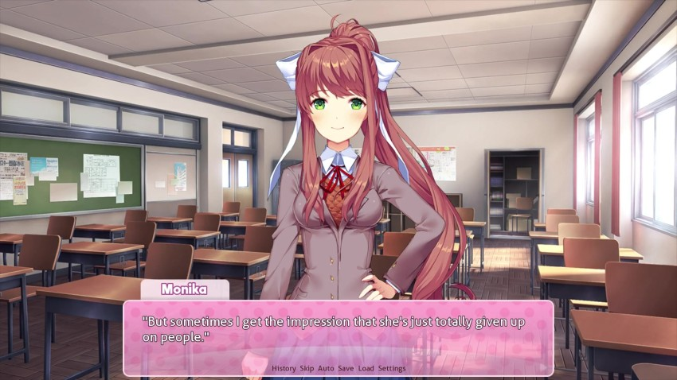
Things, however, branch off a bit this time around.
: She spends so much time in her own head that it's probably a much more interesting place for her...but that's why she gets so happy when you treat her with a lot of kindness. I don't think she's used to being indulged like that.": Like earlier...I think if she gets too stimulated, she ends up withdrawing and looking for alone time."Suddenly, the door opens.
: Yuri!"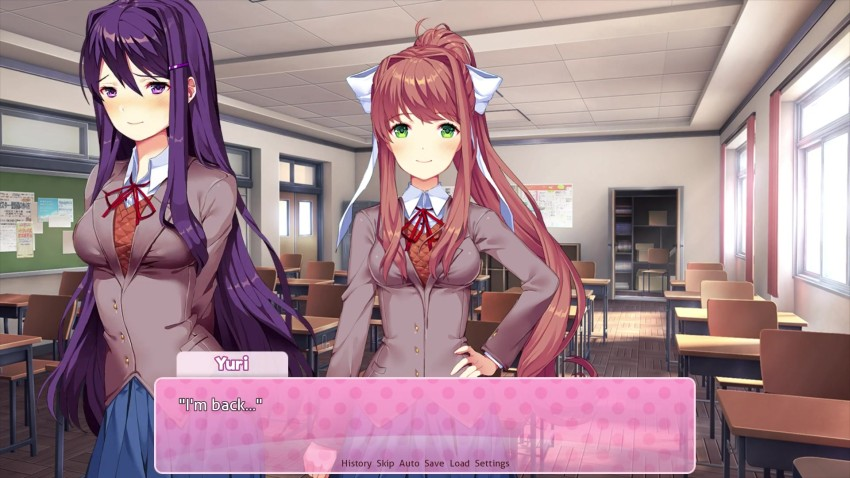
 : Did I miss anything?": Not really...well, we all started sharing our poems with each other.": Eh? Already? I-I'm sorry for being late...": No need to apologize! We still have plenty of time, so I'm more glad that you took all the time you needed."
: Did I miss anything?": Not really...well, we all started sharing our poems with each other.": Eh? Already? I-I'm sorry for being late...": No need to apologize! We still have plenty of time, so I'm more glad that you took all the time you needed.""Most people don't drink four gallons of water at a time, though.
That's why you took so long, right?
Drinkin' a lot of watttttter?"
: Alright...thanks, Monika. I suppose I should go get my poem now."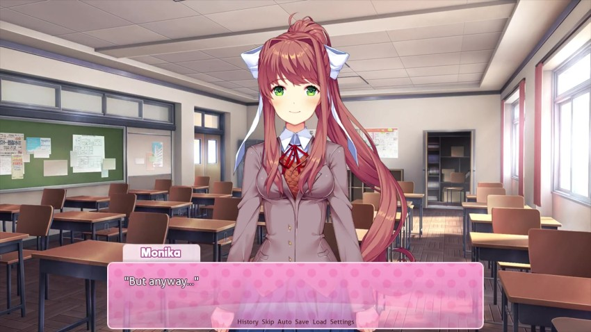
: You want to read my poem now?": I like the way this one turned out, so I hope you do too~"BGM: Okay, Everyone! (Monika)
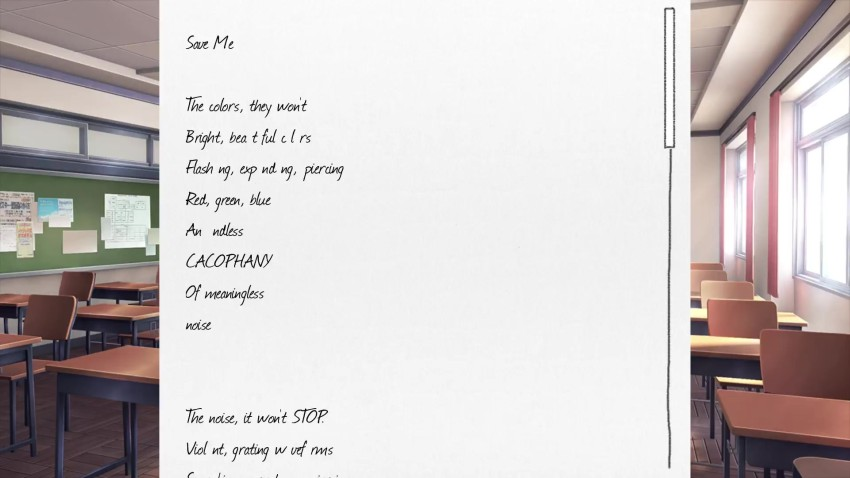
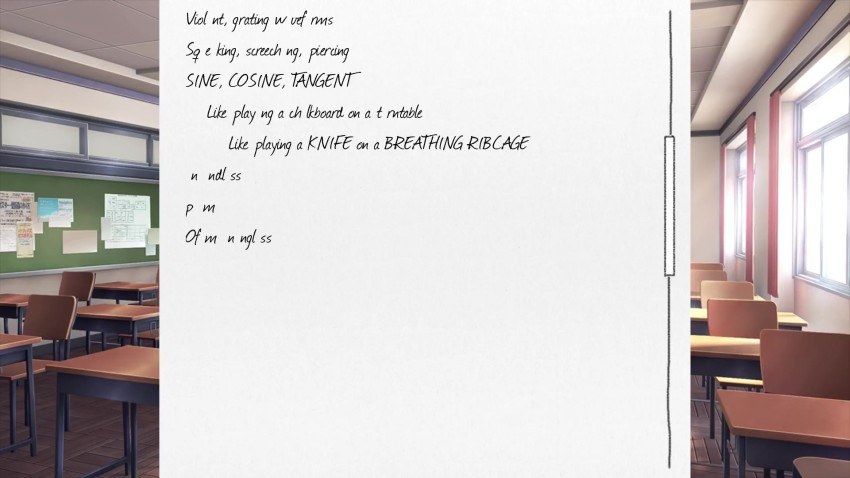
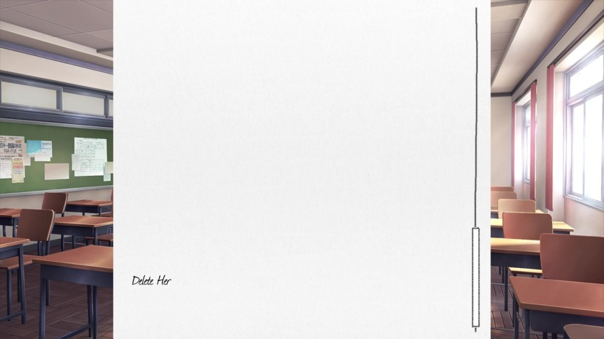
quote:
Save Me
The colors, they won't
Bright, bea t ful c l rs
Flash ng, exp nd ng, piercing
Red, green, blue
An ndless
CACOPHANY
Of meaningless
noise
The noise, it won't STOP.
Viol nt, grating w vef rms
Sq e king, screech ng, piercing
SINE, COSINE, TANGENT
Like play ng a ch lkboard on a t rntable
Like playing a KNIFE on a BREATHING RIBCAGE
n ndl ss
p m
Of m n ngl ss
Delete Her
Poem impressions: Monika's original second poem was also named Save Me. This poem, however, is showing similar signs of degridation as everything else in this timeline. Apparently Monika, who up until this point has shown relatively few signs of glitching, isn't immune to the code issues.
BGM: Music fades out.

BGM: Okay, Everyone!
...case in point.
: Sorry, I know it's kind of abstract. I'm just trying to...um...": Well, never mind." : Anyway...here's Monika's Writing Tip of the Day! Sometimes you'll find yourself facing a difficult decision...when that happens, don't forget to save your game! You never know when...um...": Can you hear me?": Tell me you can hear me.": Anything."
: Anyway...here's Monika's Writing Tip of the Day! Sometimes you'll find yourself facing a difficult decision...when that happens, don't forget to save your game! You never know when...um...": Can you hear me?": Tell me you can hear me.": Anything."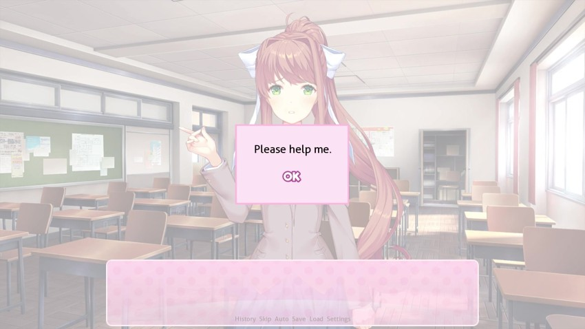

 : ...That's my advice for today!"
: ...That's my advice for today!"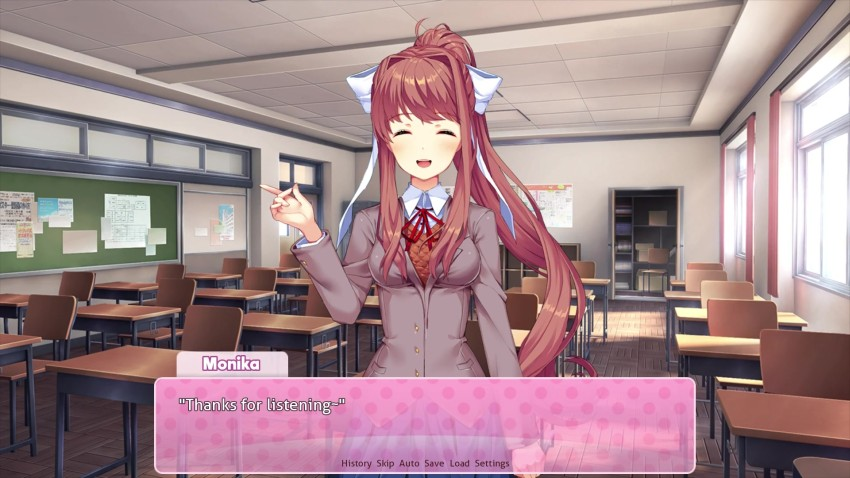
Curiouser and curiouser.
Speaking of which...
: Let's see what you've written for today.": ..."Yuri smiles and takes a deep breath.
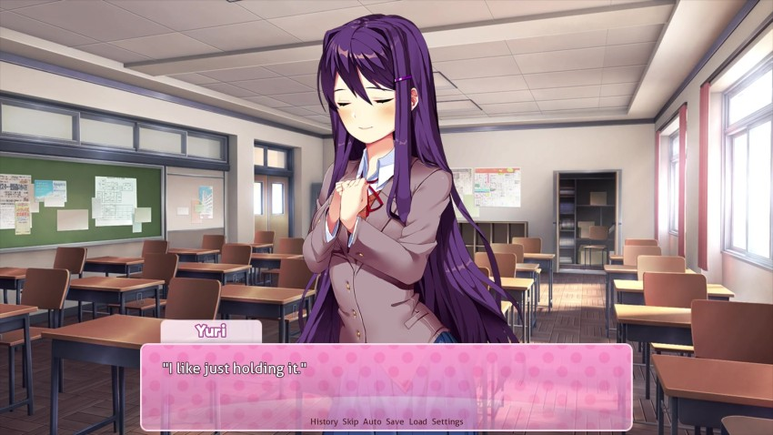
Oh good lord.
Could we please not make this weird?
: ...?": Ah, I mean--the poem turned out good! It's, ah...well, there are some things that you could work on...but that doesn't really matter. It feels like anything written by you is a treasure."You know, when we were actively pursuing you, you seemed a little...aloof.
I feel like there's some middle ground that we shot WAY, WAY past.
: Ahaha...that came out a little awkward...l-let's move on...here's the poem I wrote. You don't have to like it or anything..."BGM: Music fades out.
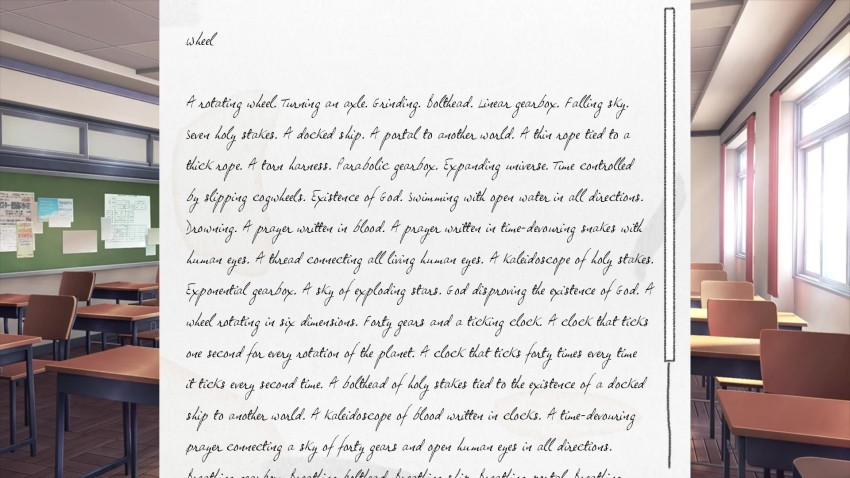
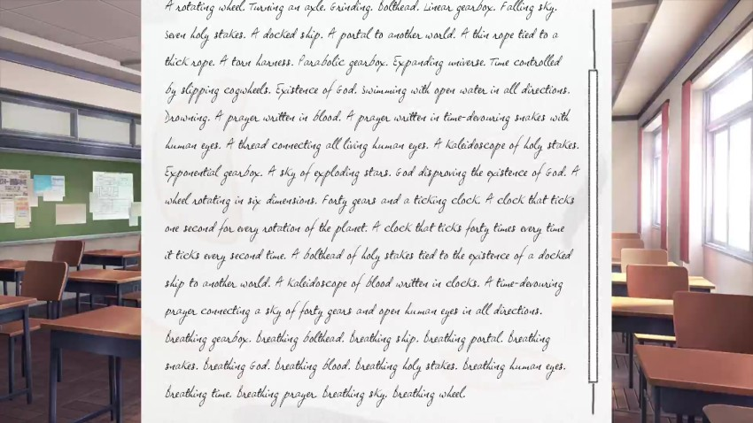
quote:
Wheel
A rotating wheel. Turning an axle. Grinding. Bolthead. Linear gearbox. Falling sky. Seven holy stakes. A docked ship. A portal to another world. A thin rope tied to a thick rope. A torn harness. Parabolic gearbox. Expanding universe. Time controlled by slipping cogwheels. Existence of God. Swimming with open water in all directions. Drowning. A prayer written in blood. A prayer written in time-devouring snakes with human eyes. A thread connecting all living human eyes. A kaleidoscope of holy stakes. Exponential gearbox. A sky of exploding stars. God disproving the existence of God. A wheel rotating in six dimensions. Forty gears and a ticking clock. A clock that ticks one second for every rotation of the planet. A clock that ticks forty times every time it ticks every second time. A bolthead of holy stakes tied to the existence of a docked ship to another world. A kaleidoscope of blood written in clocks. A time-devouring prayer connecting a sky of forty gears and open human eyes in all directions. Breathing gearbox. Breathing bolthead. Breathing ship. Breathing portal. Breathing snakes. Breathing God. Breathing blood. Breathing holy stakes. Breathing human eyes. Breathing time. Breathing prayer. Breathing sky. Breathing wheel.
Poem impressions: There's definately something wrong with Yuri, and I'm not just talking about her weird, kind-of spooky poem. Her handwriting's changed, too.
: It doesn't really matter what it's about. My mind has been a little hyperactive lately, so I had to take it out on your pen.": Ah--": That is...a-a pen fell out of your backpack yesterday, so I took it home for safekeeping and...": I, um...I just...really like...the way...that it writes.": So I wrote this...poem...with it.": And now you're touching it...": Ahaha. I-I'm okay!!" You've made it weird.Signs that you are not okay: all of the things Yuri just said.
: ...Can we pretend this conversation never happened? You can keep the poem, though..."I would love to forget it. I don't think forgetting anything about the Literature Club will ever be an option for me, unfortunately.
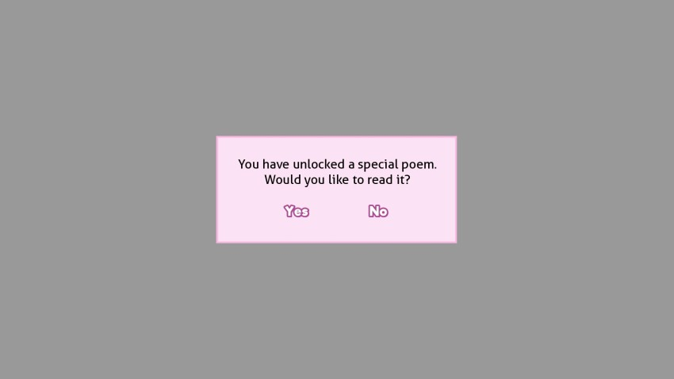
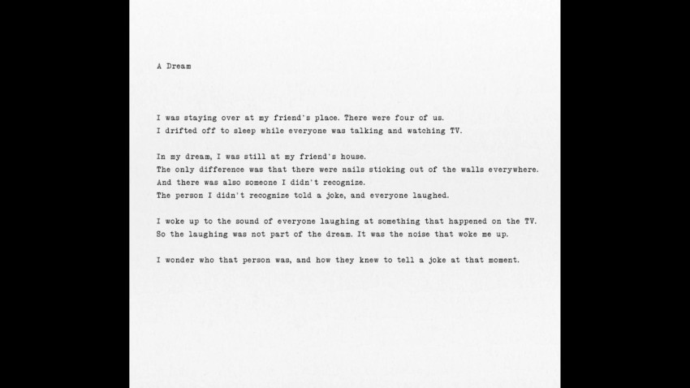
BGM: Okay, Everyone!
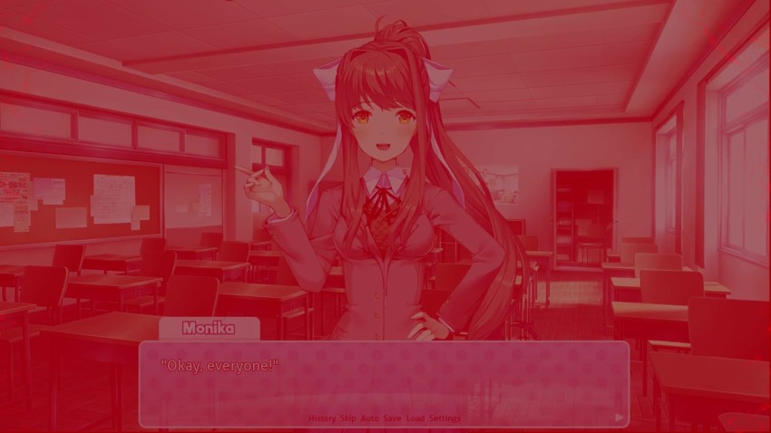
Oh great, DDLC is channeling CoD now.
: We're all done reading each other's poems, right? We have something we need to go over today, so if everyone could come sit at the front of the room..."This glitch is making it very hard to read the text.
: Is this about the festival?": Well, sort of~": Ugh. Do we really have to do something for the festival? It's not like we can put together anything good in just a few days. We'll just end up embarrassing ourselves instead of getting any new members."
I, uh, guess we're done here?
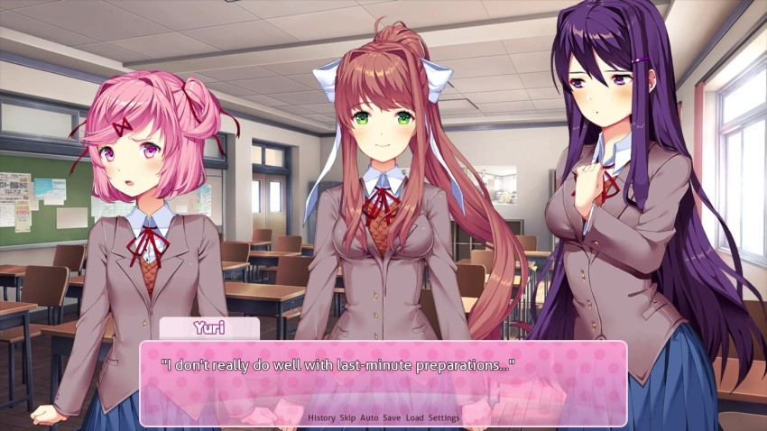
Oh, clicking fixed it. That's a relief.
: Don't worry so much! We're going to keep it simple, okay?": Look...I know everyone's been a little more...lively...ever since Mitayo joined and we've started with some club activities. But this isn't the time for us to become complacent. We still only have four members...and the festival is our only real chance to find more, you know?": What's so great about getting new members, anyway? We already have enough to be considered an official club. More members will just mean everything gets noisier and more difficult to manage."Four people isn't a club, Natsuki. It's some people hanging out sharing poetry.
: Natsuki...I don't think you're looking at it the right way at all. Don't you want to share your passion with as many people as you can? To inspire them to find the same feelings that brought you here in the first place? The Literature Club should be a place where people can express themselves like they can't do anywhere else."All three of you produced absolute drivel today. Natsuki's wasn't even real words.
: It should be a place so intimate that you never want to leave. I know you feel that way, too. I know we all do! So that's why we should work hard and put something together for the festival...even if it's something small! Right, Mitayo?": Ah...": Oh, come on! You can't take advantage of Mitayo to agree with you just because he doesn't know how to say no to anything.": Look, Monika. Do you really think any of us here joined the club with other people in mind? Yuri never even talked until Mitayo joined. As for me, I just like it better here than I do at home. And Mitayo isn't even passionate about literature in the first place. And that's everyone."I mean...its not EVERYONE
: Sorry, but you're really the only one who's so interested in finding new members.": The rest of us are fine like this. I know you're President and all, but you should really consider our opinions for once.": ..."Monika is clearly taken aback by Natsuki's words.
BGM: My Feelings
: That's...not true at all. I'm sure Yuri and Mitayo want to get more members too...right?"Not really. Nothing has gone well for any of us in the cursed club. I wouldn't wish our fate on anyone else.
: ...": ..."I don't know about Yuri, but I'm kind of indifferent. If I showed as much enthusiasm as Monika wanted, then I would probably be lying. Still, if it's up to me to rescue this situation...
: Um--": No."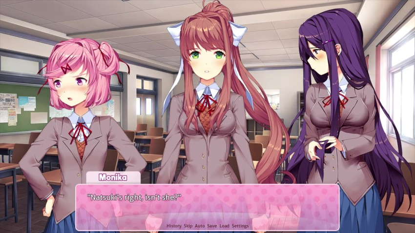
: This club...it's nothing more than a place for a few people to hang out. Why did I think that everyone here saw it the same way as I did?": But that doesn't mean that we're against getting new members or anything...": Mitayo, why did you even join this club? What were you hoping to get out of it?"It started out with cupcakes. How did it end up like this?
Have I made that The Killers reference already? I honestly can't remember.
: Well--"That's not really something I can be honest about, is it?
: In fact...if I remember, you weren't even given a choice not to join."Monika sits down and stares at her desk.
: What's the point of all this, anyway? What if starting this club was a mistake?"This is probably the most raw emotion we've seen out of Monika...ever.
: ..."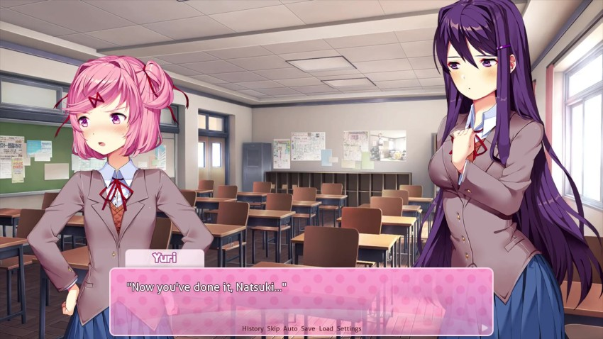
: What, me? I just spoke my mind...is it a crime to be honest?": It's not about being honest. It's about word choice. Besides, you have no right to speak for everyone else in the club like that...": You don't understand at all! I just...I just want a place that feels nice to hang out with a few friends. Is there a problem with the club being that for me? There aren't...there aren't many other places like that for me...and now Monika wants to take it away from me!": She's not taking anything away--": No, Mitayo. It's not the same. It won't be the same with the direction she wants to take it. If I wanted that, then I could have just joined any other stupid club."...you know, I've literally never thought about it until this moment, but why in the world wouldn't Natsuki have joined the anime club? SHE HAS A MANGA COLLECTION. She spends the entire club time reading it!
: But this one...I mean...at least for a little bit of time..."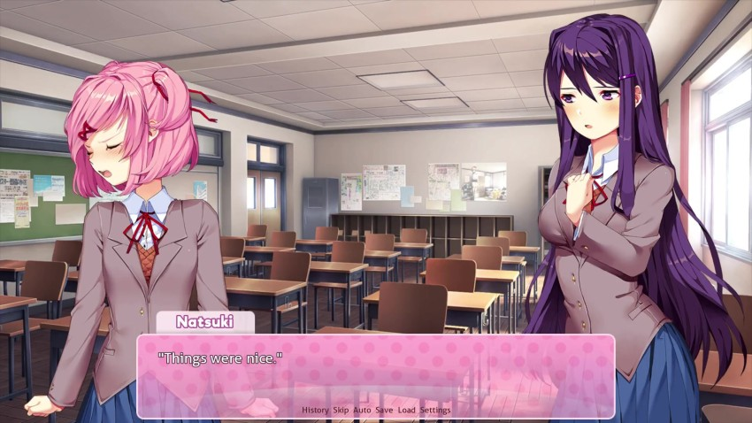
Natsuki starts packing up her things.
: I'm going home. I feel like...I don't belong here right now.": Natsuki..."Natsuki ignores Yuri and walks right out of the classroom.
:
I don't know what to do...": Well...do you have an opinion on the festival?": I-I don't know...I'm kind of indifferent, I guess..."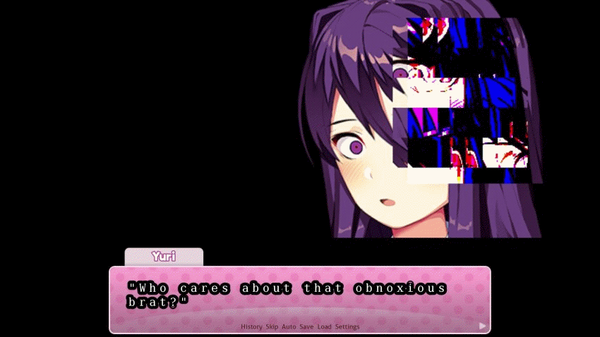
Uh...!
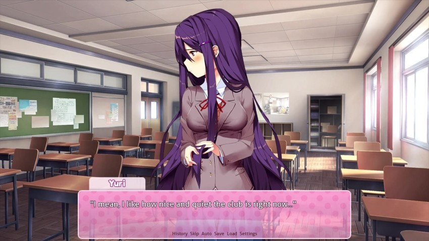
: And I'm just...happy with you here...but still! I'm the Vice President...it's not right for me to ignore my responsibilities like that..."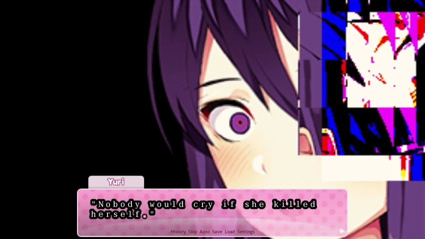
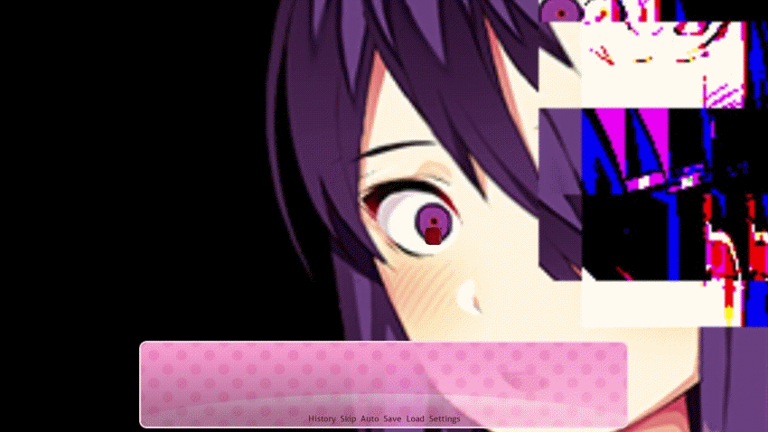
MIXED SIGNALS.
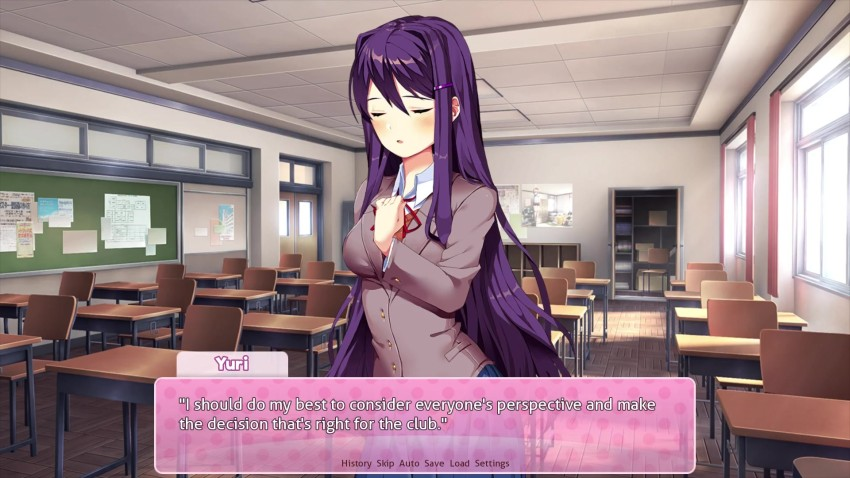
: But what about you, Mitayo? What do you want to get out of this club?"Yuri repeats the same question as Monika. I decide giving an indirect answer is better than nothing.
: ...I think the most important thing is for everyone to get along...and for the club to provide something that you can't get anywhere else. I don't think it's about how many members, but rather the quality of each member. That's what will end up making the Literature Club a special place."I can absolutely not be assed to make yet another gif for this update, but Yuris eye bleeds intermittently throughout this section.
: I see...I really agree with you. Each member contributes their own qualities in a special way. With each change in members, the identity of the club as a whole will change, too. I don't think that's necessarily a bad thing. Stepping out of your comfort zone once in a while..."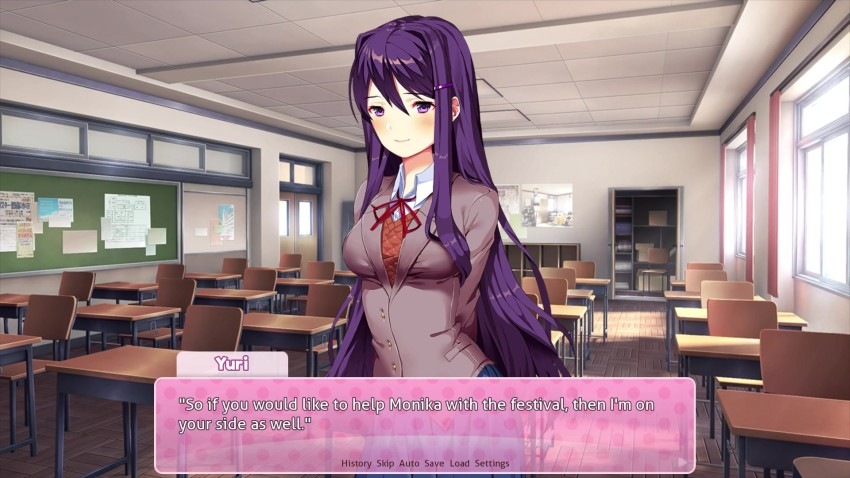
: Alright. Well, maybe we can all talk to Natsuki tomorrow..."Yuri nods.
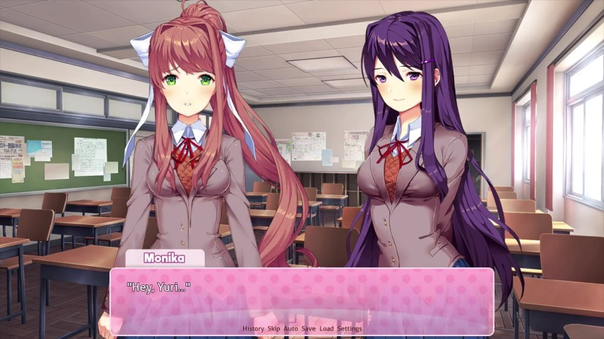
: Eh?": Um, I know things were a little awkward yesterday...but I feel like you deserve to know that I still think you're a wonderful vice president. And also, a wonderful friend.": M-Monika...": I want to do everything I can to make this the best club ever. Okay?": ...Me too."Best friends forever! <3
: Yeah...let's all go home for today. We'll talk about the festival tomorrow.": Okay. I look forward to it."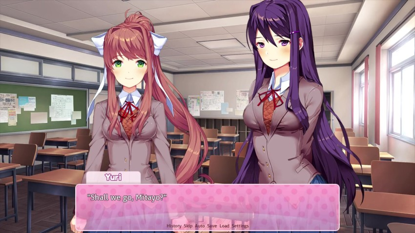
: Um--please don't take this the wrong way, but...I'm going to chat a little bit with Mitayo before we leave. Just to see what he thinks of his time here and all that..."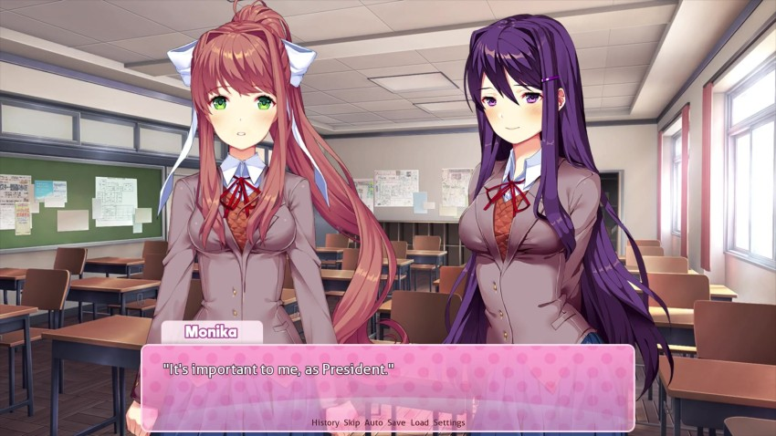
: ..."Yuri looks a little troubled, but she doesn't protest.
: Okay. I trust your judgment, Monika. In that case, I'll see the two of you tomorrow.": See you tomorrow~"Monika waves as Yuri exits the classroom.
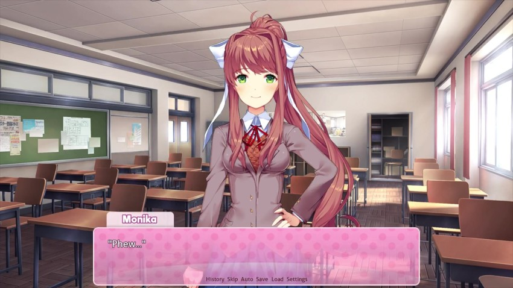
: Things have been a bit hectic lately, haven't they? Mitayo, I just wanted to make sure you're enjoying your time at this club. I would really hate to see you unhappy. I feel kind of like I'm responsible for that, as President..."BGM: Music stops abruptly.
: And I really do care about you...you know? I don't like seeing the other girls give you a hard time. With how mean Natsuki is and everything...And Yuri being a little bit...you know. Ahaha...sometimes it feels like you and I are the only real people here. You know what I mean?": But it's weird, because in all the time you've been here, we've hardly gotten to spend any time together.": Ah...I mean..."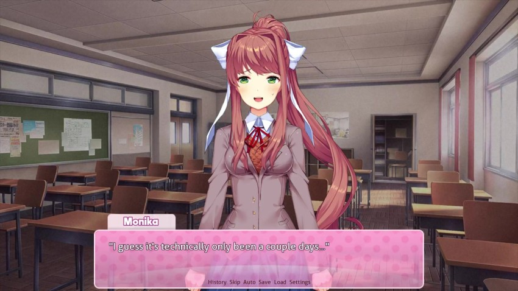
: Sorry, I didn't mean to say something weird! There are just some things I've been hoping to talk about with you...things I know only you could understand."
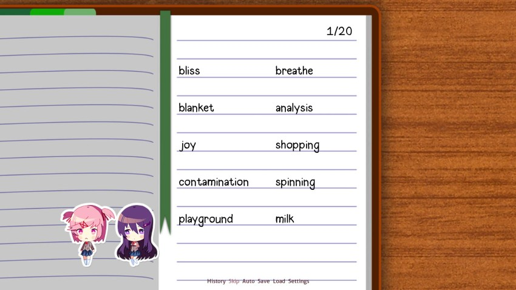
Last normal-ish poem vote. For real this time.
quote:
GROUP A
Happiness, sadness, death, tragedy, alone, love, adventure, sweet, excitement, fireworks, romance, tears, depression, heart, marriage, passion, childhood, fun, color, hope, friends, family, party, vacation, lazy, daydream, pain, holiday, bed, feather, shame, fear, warm, flower, comfort, dance, sing, cry, laugh, dark, sunny, raincloud, calm, silly, flying, wonderful, unrequited, rose, together, promise, charm, beauty, cheer, smile, broken, precious, prayer, clumsy, forgive, nature, ocean, dazzle, special, music, lucky, misfortune, loud, peaceful, joy, sunset, fireflies, rainbow, hurt, play, sparkle, scars, empty, amazing, grief, embrace, extraordinary, awesome, defeat, hopeless, misery, treasure, bliss, memories
GROUP B
Cute, fluffy, pure, candy, shopping, puppy, kitty, clouds, lipstick, parfait, strawberry, pink, chocolate, heartbeat, kiss, melody, ribbon, jumpy, doki-doki, kawaii, skirt, cheeks, email, sticky, bouncy, shiny, nibble, fantasy, sugar, giggle, marshmallow, hop, skipping, peace, spinning, twirl, lollipop, poof, bubbles, whisper, summer, waterfall, swimsuit, vanilla, headphones, games, socks, hair, playground, nightgown, blanket, milk, pout, anger, papa, valentine, mouse, whistle, boop, bunny, anime, jump
GROUP C
Determination, suicide, imagination, secretive, vitality, existence, effulgent, crimson, whirlwind, afterimage, vertigo, disoriented, essence, ambient, starscape, disarray, contamination, intellectual, analysis, entropy, vivacious, uncanny, incongruent, wrath, heavensent, massacre, philosophy, fickle, tenacious, aura, unstable, inferno, incapable, destiny, infallible, agonizing, variance, uncontrollable, extreme, flee, dream, disaster, vivid, vibrant, question, fester, judgment, cage, explode, pleasure, lust, sensation, climax, electricity, disown, despise, infinite, eternity, time, universe, unending, raindrops, covet, unrestrained, landscape, portrait, journey, meager, anxiety, frightening, horror, melancholy, insight, atone, breathe, captive, desire, graveyard
Raw Video Link: http://www.polsy.org.uk/play/yt/?vu...u.be&autoplay=1